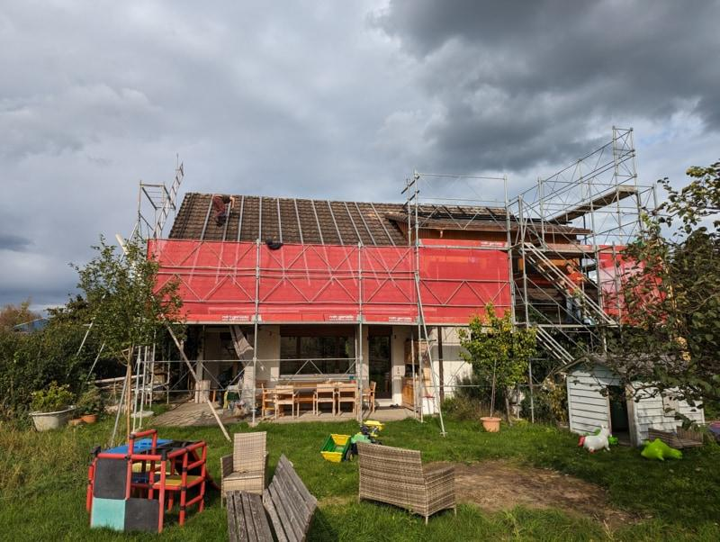
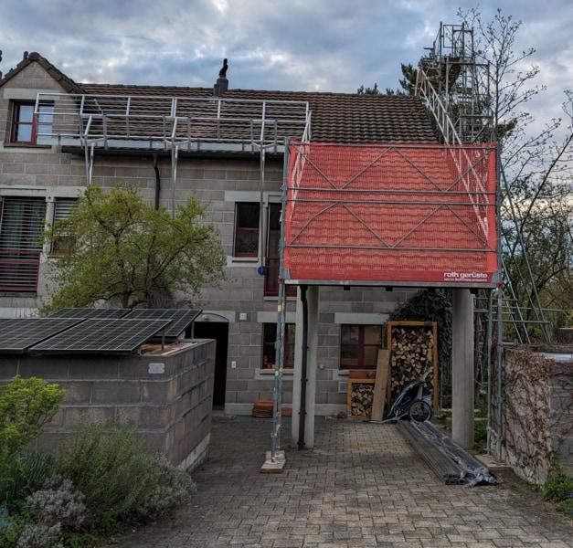
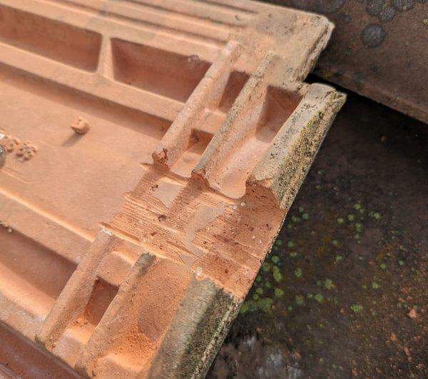
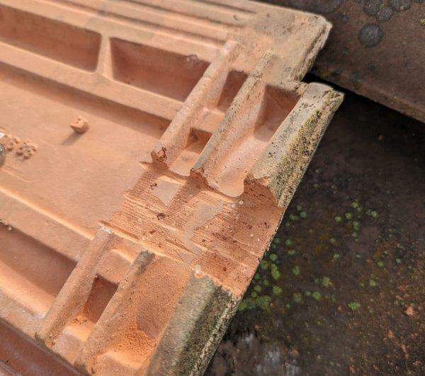
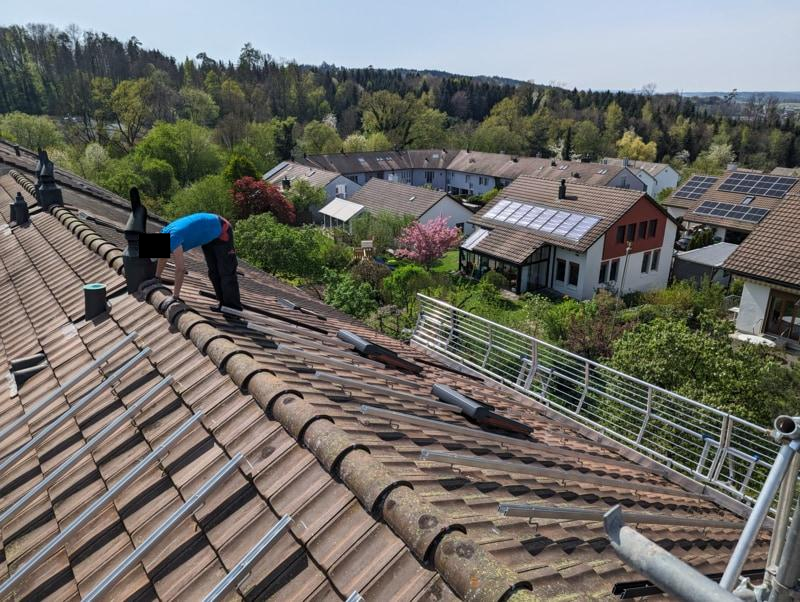
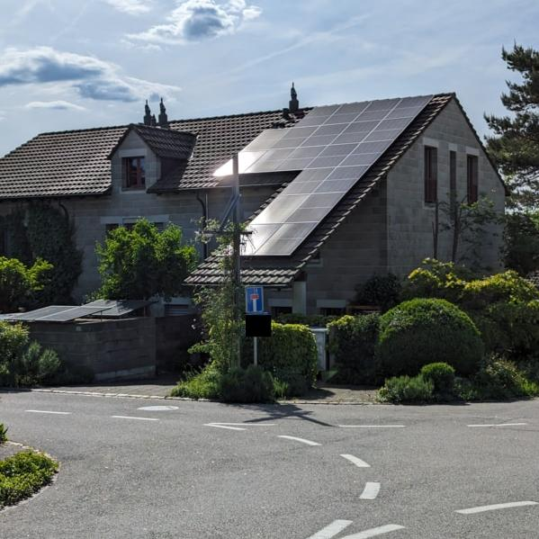
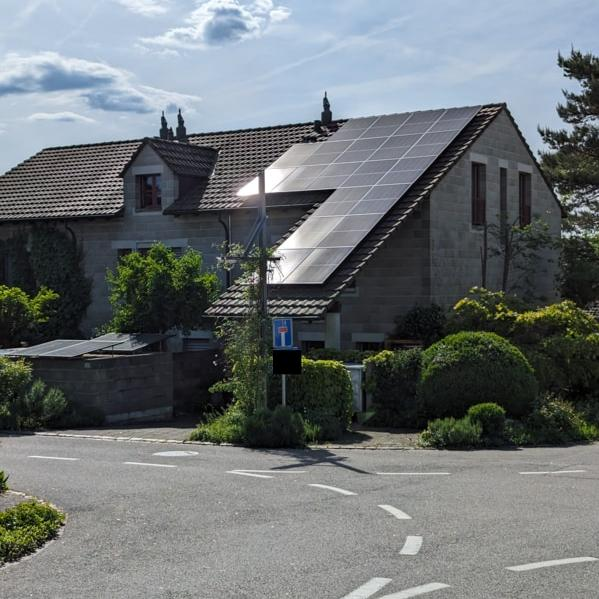
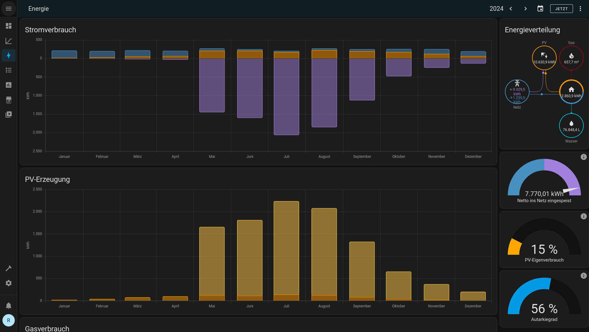

Zugegeben, der Titel mag provokant wirken. Aber die Sonne liefert in nur 30 Minuten genügend Energie, um den Energiehunger der gesamten Menschheit für ein ganzes Jahr zu decken. Diese Energiequelle steht uns allen kostenlos zur Verfügung – ohne Wünschelruten oder Energiesteine, sondern mithilfe evidenzbasierter Wissenschaft. In diesem Artikel möchte ich euch zeigen, wie ich auf unserem Haus eine 15-kWp-Photovoltaikanlage gebaut habe und meine Erfahrungen mit euch teilen.
Alles begann im Januar 2022, als ich aus gebrauchten Solarpanels und einem alten Wechselrichter eine Plug-&-Play-Photovoltaikanlage, auch bekannt als Balkonkraftwerk, baute. Diese kleine Anlage optimierte ich im Laufe der Zeit: Der Wechselrichter wurde durch einen Modulwechselrichter ersetzt, und das Monitoring übernahm fortan openDTU zusammen mit einem Grafana-Dashboard.
Parallel dazu engagierte ich mich in einem Projekt, bei dem in unserer Siedlung eine grosse PV-Anlage realisiert werden sollte. Doch leider scheiterte dieses Vorhaben an zu vielen unfachlichen Meinungen. Dennoch zeigte mir das Balkonkraftwerk auf unserem Velohäuschen, wie einfach es inzwischen geworden ist, Strom zu erzeugen – ohne mechanische Bewegungen oder Verbrennung.
Die Stromkosten unserer Familie halbierten sich durch die kleine Anlage, und ich war zunehmend fasziniert von der Idee, unser Dach für eine grössere Photovoltaikanlage zu nutzen.
Im Jahr 2023 holte ich einige Offerten für eine Dachanlage ein. Doch die hohe Nachfrage durch die Energiekrise liess die Preise explodieren: Die Offerten lagen zwischen 30’000 und 35’000 CHF. Diese hohen Kosten liessen mich nach Alternativen suchen.
Einen entscheidenden Anstoss gab mir ein Gespräch bei einem Grillfest im Sommer 2023. Eine Bekannte fragte mich, ob ich ihr beim Bau ihrer Solaranlage helfen könnte. Sie wollte die Anlage selbst bauen, jedoch mit fachlicher Anleitung. Ich sagte zu und half im Herbst 2023 mehrere Tage lang bei der Montage. Bereits nach dem ersten Tag war für mich klar: Das möchte ich auch machen!

Auf dieser Baustelle lernte ich einen Fachplaner kennen, der die Planung und Berechnungen übernimmt und zugleich Werkzeug sowie sein Fachwissen bereitstellt. Sein Angebot ähnelte den bekannten Solargenossenschaften: Das Material wird zum Einkaufspreis aus dem Grosshandel bezogen, und der Planer kann bei Bedarf kritische elektrische Arbeiten wie das Krimpen von Steckern übernehmen. Auch die bürokratischen Hürden, die oft nur für Unternehmen vorgesehen sind, erledigte er zuverlässig.
Ende 2023 begann ich mit der Planung unserer Anlage. Obwohl es viele frei zugängliche PV-Rechner gibt, suchte ich ein leistungsfähigeres Tool. In der c’t wurde das Programm PV*SOL vorgestellt, das ich fortan nutzte. Leider läuft es nicht unter Fedora, weshalb ich eine Windows-VM mit Gnome Boxes einrichten musste. Ebenfalls Ende 2023 trafen wir uns mit dem Fachplaner, der eine detaillierte Offerte für uns erstellte.

Der Preisunterschied war beachtlich: Während eine schlüsselfertige Anlage ca. 35’000 CHF kosten würde, hätten sich die Kosten nach Abzug der Einmalvergütung und Steuerersparnissen auf rund 25’000 CHF reduziert. Die Selbstbauvariante hingegen kam auf nur ca. 15’000 CHF. Nach reiflicher Überlegung entschieden sich meine Partnerin und ich für den Selbstbau und bestellten das Material im Januar 2024. Ziel war es, im April mit dem Bau zu beginnen.
Bis zum Baustart im April gab es einiges zu organisieren. Ich übernahm die Bauleitung selbst und kümmerte mich um folgende Punkte:
Im April war alles vorbereitet: Das Gerüst stand, das Material war geliefert, und meine Partnerin und ich hatten eine Woche Urlaub eingeplant. Auch das Wetter spielte glücklicherweise mit.

Der Aufbau einer PV-Dachanlage lässt sich in folgende Arbeitsschritte unterteilen:
Ich werde im Folgenden die einzelnen Schritte detailliert beschreiben.
Der erste und aufwendigste Arbeitsschritt war das Montieren der Dachhaken. Vor Beginn der Arbeiten massen wir anhand der Statikberechnung und des Aufbauplans alle Positionen aus und markierten sie mit Kreide. Dieser Schritt ist entscheidend und muss sehr sorgfältig durchgeführt werden.
Die Dachhaken verbinden die PV-Anlage mit dem Dach. Sie werden mit langen Schrauben direkt an den Dachsparren befestigt. Der Haken ragt zwischen zwei Ziegeln hervor. Um sicherzustellen, dass die Ziegel weiterhin dicht abschliessen, mussten kleine Ausschnitte in die Ziegel geschnitten werden. Geübte Dachdecker:innen erledigen dies oft mit einem gezielten Hammerschlag. Wir entschieden uns für eine präzisere Methode und verwendeten einen Winkelschleifer mit Diamantscheibe.
Ein weiterer wichtiger Punkt war die korrekte Höhenanpassung der Dachhaken. Die Belastung wird senkrecht zur Dachfläche übertragen, und es darf keine Last auf die darunterliegenden Ziegel wirken, da diese sonst brechen könnten.

 
 
Nach der Montage der Dachhaken folgte die DC-Verkabelung zwischen den Ziegeln und dem Unterdach. Wir massen die Kabellängen auf dem Dach aus, schnitten die Leitungen am Boden zu und zogen sie vorab in Elektrowellrohre ein. Diese Vorbereitung vereinfachte die Arbeit auf dem Dach erheblich.
Die Steigleitung vom Keller bis zum Dach wurde entlang des Regenrohrs verlegt, sodass nur ein kleiner Durchbruch vom Keller nach draussen notwendig war. Zusätzlich musste ein Potentialausgleich vom Keller bis aufs Dach gezogen werden, um die Aluminium-Unterkonstruktion elektrisch zu erden.


Ein regnerischer Tag bot die ideale Gelegenheit, um im Keller die Elektrik zu montieren. Wir brachten den Wechselrichter, den Generatoranschlusskasten (GAK) mit Überspannungsableitern, die Potentialausgleichschiene sowie den Hauptschalter an. Die Steckverbindungen der DC-Leitungen wurden sorgfältig gekrimpt, da unsaubere Verbindungen oft die Ursache für Brände sind. Mit meiner Erfahrung als Automatiker war dies für mich eine vertraute Aufgabe.

Die Montage der Unterkonstruktion bestand darin, Aluminiumprofile auf den Dachhaken zu befestigen. Beim Einlegesystem von Novotegra wurden zuerst senkrechte C-Schienen parallel zur Dachfläche angebracht. Anschliessend wurden waagerechte Einlegeschienen im korrekten Abstand darauf montiert.
Das Ausrichten der Schienen erforderte Präzision, war jedoch eine der optisch befriedigendsten Arbeiten: Man sieht den Fortschritt auf dem Dach direkt.
 
Nach sechs intensiven Arbeitstagen waren alle Vorbereitungen abgeschlossen. Die Montage der Solarpanels war der schnellste Schritt: Innerhalb von zwei Stunden waren alle 33 Module befestigt. Der Fachplaner überprüfte anschliessend die gesamte Anlage und führte eine Isolationsmessung durch. Danach wurde der Hauptschalter eingeschaltet, und die PV-Anlage ging ans Netz.
 

In der Schweiz gibt es im Prinzip zwei Förderprogramme für Photovoltaikanlagen. Das erste ist die sogenannte Einmalvergütung. Mit dieser erhalten Betreiberinnen und Betreiber von PV-Anlagen einen einmaligen Investitionsbeitrag. Die Höhe dieser Vergütung hängt von der Grösse, Lage und Ausrichtung der Anlage ab. Allerdings sinkt die Einmalvergütung jedes Jahr ein wenig und wird in einigen Jahren vermutlich ganz wegfallen. Das ist aus meiner Sicht auch sinnvoll, da sich PV-Anlagen bereits heute ohne diese Förderung rentieren.
Das zweite Förderprogramm ist eher indirekter Natur: Seit 2013 besteht in der Schweiz die gesetzliche Pflicht, die gesamte Stromproduktion aus Kraftwerken mit einer Netzanschlussleistung von über 30 kVA mittels Herkunftsnachweisen (HKN) zu erfassen und unabhängig beglaubigen zu lassen. Der Hauptzweck der HKN ist es, den Endverbraucher:innen Transparenz zu bieten. Die erzeugte Energie wird zertifiziert, und Produzierende erhalten durch die HKN einen finanziellen Mehrwert, der für höhere Produktionskosten entschädigt. Damit man sowohl die Einmalvergütung als auch die HKN ausbezahlt bekommt, muss jede PV-Anlage von einem unabhängigen Unternehmen beglaubigt und abgenommen werden. Auch unser lokaler Energieversorger führte eine zusätzliche Abnahme der Anlage durch.
Für die Überwachung der Anlage legte ich grossen Wert darauf, dass dies lokal ohne Abhängigkeit von einem Cloud-Dienst des Herstellers möglich ist. Da ich bereits Home Assistant nutze, suchte ich nach einem Wechselrichter, der sich einfach integrieren lässt. Meine Wahl fiel auf den Fronius Symo Advanced. Dieser Wechselrichter bietet eine Modbus-TCP-Schnittstelle, die den SunSpec-Standard nutzt, wodurch sich alle relevanten Daten problemlos lokal auslesen lassen. Zusätzlich existiert bereits eine native Integration für Home Assistant, was die Überwachung weiter erleichtert.

Die Baukosten lagen im geplanten Rahmen, was mich natürlich sehr freute. Durch den Selbstbau konnten wir ca. 10’000 CHF einsparen. Natürlich hat uns das Projekt auch eine Woche Urlaub und einige Stunden an Planungs- und Einarbeitungszeit gekostet. Ich betrachte diese Zeit jedoch nicht als Arbeit, sondern als Freizeitaktivität und Hobby.

Seit dem 2. Mai 2024 läuft unsere PV-Anlage und hat bis dato 9’700 kWh Strom erzeugt. Der geschätzte Jahresertrag liegt bei etwa 13’000 kWh. Dank des Energie-Dashboards in Home Assistant habe ich den Überblick über Ertrag und Verbrauch.

In diesem Jahr erhielten wir bereits 1’900 CHF Vergütung vom Energieversorger. Zudem haben wir 200 bis 300 CHF an Stromkosten eingespart. Unter den aktuellen Strompreisen und Einspeisevergütungen wird sich unsere PV-Anlage in sieben bis acht Jahren finanziell amortisieren. Viel wichtiger als die finanzielle Amortisation war uns jedoch die energetische Amortisation. Laut Fraunhofer ISE wird diese bereits nach etwa 1.5 Jahren erreicht sein.
Das nächste Projekt zur Nutzung freier Energie ist bereits geplant: Wir möchten unsere alte Gastherme durch eine Wärmepumpe ersetzen. Um diese optimal zu dimensionieren, sammle ich seit zwei Heizperioden Daten über Temperatur- und Lastverläufe – ebenfalls mit Home Assistant und diversen Sensoren. Diese Daten sollen dazu beitragen, die Wärmepumpe präzise auf unsere Bedürfnisse abzustimmen. Mehr dazu wird es in einem zukünftigen Artikel geben.